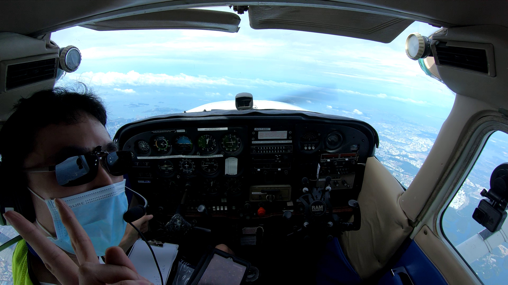

The Singapore Airlines (SIA) cadet pilot interview process is reputed to be one of the most unique and grueling interviews in Singapore. The interview success rate is rumoured to be as low as 6% depending on your source.
This interview process is so (in)famous that there is even a 5-year long Hardwarezone forum topic dedicated to this!
SIA will invest some SG$250K to train a student pilot from scratch to a Second Officer of a jet airliner over the span of about 2 years. The pilot will understandably be later shackled with a 7-year bond (for a Singapore citizen) after that.
Few if any other airlines in the world are this generous. Most of them require cadets to pay for their own training. It’s just like saying most companies in the world don’t pay for your degree before you apply to them for a job. Given this fully-sponsored training program, it is no doubt that it attracts tons of aspiring airline pilots hoping to have their education paid for.
With so many applicants and a huge upfront cost, this means SIA has to be extremely stringent during the interview process. You only have one shot in life to attempt the interview. Failure in any stage means that’s it, there is no second chance. The only exception I believe is the preliminary interview where one is given another try if you can prove in your second attempt that you have made a significant improvement.
I applied and I actually passed all the interview stages to the point I was given a start date after some delays on my side. But given the COVID-19 situation, my application is now delayed indefinitely.
Much has been written about this process online so it is not really a secret. Instead of going into too much specific detail, I’ll share my thoughts and journey through this process.
I would group the interview process into 5 stages with stage 0 for prior personal preparation.
- Preparing for the interview
- Preliminary Interview
- Compass Aptitude test
- Final Interview
- Tea Party
- CAAS Class 1 Medical + SIA extras
Stage 0: Preparing for the interview
Before any job interview, it’s expected that you have to prepare for it. For an interview for a flying job, it’s obvious the interviewers will ask you flying questions.
It’s true flying knowledge at least the basics is required. So an applicant should at least know the theory of flying and the major parts of an aircraft.
However there is more to being an airline pilot than just knowing about flying theory. Aspects like passion, education level, aptitude, EQ, dressing the part are also part of the equation.
Passion in flying is something one will be evaluated heavily. After all, a pilot job is demanding and SIA hopes to not have pilots quit or break their bond early. To demonstrate passion, you should show something tangible. Here is where I believe having some flying experience helps. Or if it’s too costly, something related to aviation, I’m just guessing here, maybe drones, ATC job etc. If not, how are you different from another candidate who only just talk. Anybody also can talk.
From reading up online accounts, SIA seems to prefer degree holders especially for those with no prior flying experience. A friend of mine who does not have a degree but got a Private Pilot Licence (PPL) did not even get called up for the interview at all. As much as a degree may not be directly relevant to a pilot job, it’s a filter many employers use not just SIA. Besides, having a degree is also good for personal development and a backup plan if one loses the flying job in future.
In terms of attire, one is expected to dress well. For men at least, a long-sleeve shirt, tie, pants and leather shoes. The thing is, I work in the IT industry where such a dress code is considered overdressing. I had to get the necessary clothes for this interview lol!
EQ is something hard to quantify but will be evaluated throughout the entire interview process. How you socialise, speak, explain your thoughts, handle stress etc? So if you are the type that is poor in articulating in English, very shy, scared to talk, will break under pressure, then maybe need to improve first lor.
Stage 1: Preliminary Interview
After applying online, I was given a preliminary interview date some weeks later. Here I was interviewed by an SQ captain and a HR person who was just mostly observing.
I was asked the following questions. They are kind of obvious lah so one should already have the answers at the back of your hand. But different candidates may get different questions based on the resume.
- Tell me about yourself…
- Why do you want to be an airline pilot?
- Did you apply for other airlines? Why or why not?
- Where you learn flying?
- How come your boss allow you to take long leave to go to the US?
- Describe to me about Cessna 172?
- What are the speeds for rotation, flap extension, approach?
- What is a glass cockpit?
- What is Fly by wire?
- What are the differences between your Cessna/Piper you have flown and large jets?
- What are the differences between a General Aviation (GA) pilot and an airline pilot?
- You do know you’ll take a huge pay cut during training?
- Where you clocked your “Pilot-in-Command” hours? I flew some at Seletar Flying Club.
- Where you see yourself 5-10 years from now if you are accepted?
Stage 2: Compass Aptitude test
If you pass Stage 1, then you’ll come to Stage 2. Failure of any interview stages I guess means you cannot proceed to the next Stage.
Here the candidate will go through the Computerised Pilot Aptitude Screening System (COMPASS). It’s used by the RSAF and commercial airlines to evaluate a potential pilot on the following skills: reflexes, multi-tasking, mathematics, short-term memory, spatial abilities, rapid and correct decision-making and English vocabulary.
In simple terms, this is a glorified computer game but a very serious one. The way a COMPASS test operates is not a secret.
The way the tests are structured is that they will push you all the way to your limits to find out where is your breaking point. When I reached the failure point in these tests, I felt it gave me a very demoralising feeling unsure whether I did well or not.
I remembered after completing the COMPASS test which lasted a few hours, describing myself as feeling mentally drained is a severe understatement. I couldn’t do anything else for the rest of the day.
Stage 3. Final Interview
Well if you get a date for the Final Interview, means you have passed everything before!
I was interviewed by a panel of 5 SQ captains.
This I felt was the most grueling aspect of all. The captains start out nice. Then suddenly they will bombard you with questions usually all at one go and sometimes with an angry tone. I believe they are evaluating whether you can think and react clearly under extreme pressure.
Here are some of the stuff I was asked. The questions will differ from candidate to candidate
- Describe yourself
- What sacrifices a pilot makes compared to a 9 to 5 job?
- From my resume, they gathered I have a PPL so they started to grill me on it.
- Where u take it? Why US license? Why not Malaysia or Singapore?
- What is your favourite maneuver? Ok describe it.
- Describe “this manuever”. Did u manage to within a commercial standard?
- Name all the planes in our fleet
- If you can choose, which do you prefer to fly?
I believe I gave a very uncommon answer which was the Boeing 737. I could deduce from their expressions that all the Captains were shocked!
So they asked me why.
I said it’s because the 737 does not use fly-by-wire. It means there is a direct mechanical connection from the pilot’s controls in the cockpit to the external flight controls. Most other modern jetliners use fly-by-wire where the pilot flies the computer and the computer flies the plane.
I didn’t purposely say the B737 to game the interview, it’s because that’s what I truly want if given a choice. The Boeing 737 is an old-school plane that is closest to a GA aircraft unlike all the other modern jets (Except B747 under SingCargo).
Hence the 737 pilot will have a greater “feel” of the external flight controls. Therefore relatively speaking, I believe a 737 will require the pilot to exercise more stick-and-rudder skills.
- You know 737 Max got grounded, will u fly after it’s back?
I actually said I will all the more fly it! If the 737 Max ever gets back into the air, it will be the safest plane in the world. All the aviation authorities worldwide will have scrutinised the plane inside out for flaws, more so than any other passenger jet in history.
- If I let you fly B737 for 10 years will you still do it? Even if it means less money than bigger jets?
Stage 4. Tea Party
During Tea Party, we just sit one round on the sofa with some refreshments. The Captains tell us to ask them questions. I’m guessing they are trying to evaluate our EQ here by how we interact with them in a less formal setting.
I asked some:
- How often do they interview candidates?
- How do reservist obligations work?
- Is GA flying still encouraged?
Stage 5. CAAS Class 1 Medical + SIA extras
A CAAS Class 1 Medical checkup is required for all local airline pilots to take on a regular basis. One is put through a battery of physical tests, eyesight, hearing, ECG and blood test etc.
This initial Class 1 Medical costs about ~SG$700 is fully paid for by SIA if you go through their interview process successfully. All the other airlines requires you to pay it yourself.
It took a whole day that it felt like taking an astronaut medical checkup instead. I believe SIA also imposes more stringent medical requirements compared to other airlines. I couldn’t tell which were the extra SIA-only tests though.
I managed to clear everything but the stringent medical standards would further cement my understanding that the entire career of an airline pilot is dependent on whether one can pass this medical unlike most other jobs. Failure in any parts of the medical checkup in future means the pilot license is invalidated and there goes the job.
Post-interview thoughts
I was initially given a start date but then the COVID-19 situation came in and they cancelled it.
It took me a long time before deciding to write this publicly as I’m unsure how others will perceive this. Although technically I’m still on the SIA cadet pilot waiting list, I know it will be a long wait. This COVID-19 situation could take years to be solved.
There is an unwritten rule for the maximum age of a SIA cadet pilot which is 32. Very likely I will bust the age ceiling by the time SIA resumes hiring. Even if not, by then the opportunity costs of me switching careers will be so high that it’s simply not worth it. It’s not as if my current career in tech is not promising. It is very good so the opportunity costs escalates further.
The stringent medical standards actually injected a healthy dose of reality and swayed me quite a bit. I may not have any medical issues now but I have read of pilots who lost jobs because they got medical problems like high cholesterol, diabetes and cancer in their later years. You can maximise the odds by taking care of your body as much as possible by avoiding the vices and risky activities, eating well and exercising regularly. But it’s still a game of chance.
Is there an alternative if still want to be an airline pilot?
Well the possibility is always there to pay my own way through training while waiting things out. But coming up with a 6-figure sum is no easy feat. I have no rich parents to bank on for this and taking a loan in my opinion is too risky for after spending all that money, there is no guarantee of a job.
Being an airline pilot is not the only way to earn money from flying. There are other jobs in GA like private jets and flight instructor. In fact if you ask me, I think doing part time flight instructing is something I would want to be able to do in the long term.
In Singapore’s context, airlines are still the conventional route most people take as the other jobs are hard to break into.
Final Thoughts
It’s partly correct to say the reason of me earning my PPL was to give me the best shot at this once-in-a-lifetime SIA interview. I made many sacrifices in my life to earn and save my money to do it. So many things I chose not to do and opportunities I had to reject or could not take.
This challenging SIA interview process has actually made me learn more about myself, my limits and reevaluate my personal goals in life. Even if it wasn’t for the airline job, I have gained plenty through learning how to fly. No words can describe the feeling when you are in command of an aircraft in the sky.

My solo flight at 10000 feet in SG. The highest possible altitude allowed in this local airspace.
I’ll still keep my flying license active through GA and that is enough for me. Doing tech in my job which I also have a passion in and flying outside of my job will work just as well.


{kind=link}